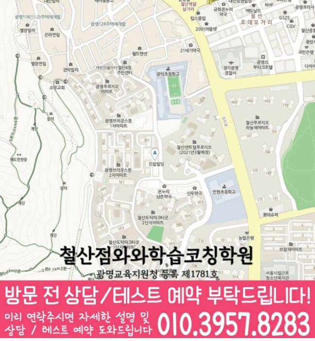

철산동 초등 영수학원 수업 안내

지역 학원 안내
철산동 초등 영수학원을 알아보는 학생과 학부모를 위해 학습 진단, 주간 계획, 오답 관리와 상담 기준을 정리했습니다.

학습관리 확인
최근 성적, 학교 진도, 과목별 약점과 공부 습관을 함께 확인합니다.
계획표 작성에서 끝나지 않고 실제 실행 여부와 미완료 원인을 점검합니다.
틀린 문제의 원인을 분류하고 유사 문제로 다시 확인해 반복 실수를 줄입니다.
경기도 광명시 철산동 도덕공원로 27 삼우빌딩 2층
와와학습코칭센터 철산점 위치는 (경기도 광명시 철산동 도덕공원로 27 삼우빌딩 2층)입니다. 경기도 광명시 도덕공원로27 삼우빌딩 2층 (주차장이 없습니다 인근 철산성당이나 인근 아파트에 주차가능합니다)
센터 제공 교습비 링크 자료를 확인할 수 있습니다. 실제 개설 과목·횟수·금액은 상담 시 최종 확인해 주세요.
학원 선택 핵심 안내
철산동 초등 영수학원을 알아볼 때 수업 횟수보다 앞서 볼 것은 학생의 현재 학습 흐름입니다. 수업 날에는 공부하지만 수업 사이 복습 간격이 길어지는 학생이라면 사용 교재마다 끝낸 범위와 다시 볼 범위를 표시하는 것을 상담의 첫 기준으로 삼을 수 있습니다. 학생에게 맞는지 판단하려면 설명을 듣는 것에서 끝내지 말고 확인 방법을 질문해야 합니다. 첫 질문은 “철산동 초등 영수학원 상담에서는 집에서 이어갈 수 있는 짧은 복습 분량은 어떻게 정하나요?”가 좋습니다.
수업 날에는 공부하지만 수업 사이 복습 간격이 길어지는 학생
초등 영어·수학 기준으로 사용 교재마다 끝낸 범위와 다시 볼 범위를 표시하는 것
센터 제공 자료에서 학교 정보가 확인되지 않았습니다. 센터 제공 자료의 초등 가능 범위는 영어 초1, 초2, 초3, 초4, 초5, 초6 · 수학 초1, 초2, 초3, 초4, 초5, 초6입니다. 학교별 수업과 현재 개설 여부는 상담 시 확인해 주세요.
센터명은 와와학습코칭센터 철산점으로 안내되어 있습니다. 주소는 경기도 광명시 철산동 도덕공원로 27 삼우빌딩 2층입니다. 등록번호는 광명교육지원청 등록 제1781호로 표시되어 있습니다.
철산동 초등 영수학원 상담에서는 집에서 이어갈 수 있는 짧은 복습 분량은 어떻게 정하나요?
상담 준비 자료
철산동 학생의 현재 진도와 습관을 보여주는 기록을 중심으로 준비하고, 없는 자료를 새로 만들 필요는 없습니다.
학습코칭 운영 방식
철산동 초등 영수학원을 알아볼 때는 수업 과목만 보는 것보다, 학생이 스스로 계획을 지키고 오답을 다시 설명할 수 있는 관리 흐름까지 확인하는 편이 좋습니다.
이번 주에 끝낼 분량을 작게 나누고, 학생이 실제로 지킬 수 있는 계획으로 조정합니다.
수업을 들었는지보다 계획을 수행했는지, 미룬 이유가 무엇인지까지 확인합니다.
틀린 문제를 다시 푸는 데서 끝내지 않고, 왜 틀렸는지 말로 설명하는 단계까지 봅니다.
상담 후에도 학부모가 아이의 변화와 다음 관리 포인트를 이해할 수 있게 정리합니다.
현재 교재·최근 시험지·숙제 실행 정도를 함께 보며 먼저 막힌 지점을 찾습니다.
철산동 기준으로 상담할 때는 아이가 어느 단원에서 막히는지, 계획을 왜 미루는지, 오답을 다시 풀 때 어떤 설명이 필요한지까지 함께 정리합니다. 초등 과정은 진도만 빠르게 나가는 것보다, 개념 이해 → 문제 적용 → 오답 원인 확인 → 재풀이 흐름이 끊기지 않는지가 중요합니다.
자주 묻는 질문
와와학습코칭센터 철산점의 위치·수강 범위와 상담 준비사항을 실제 제공 정보에 맞춰 정리했습니다.
페이지에 연결된 센터는 와와학습코칭센터 철산점이고 주소는 경기도 광명시 철산동 도덕공원로 27 삼우빌딩 2층입니다. 실제 방문 일정은 상담 시 다시 확인해 주세요.
철산동 초등 영수학원 센터 제공 자료의 초등 가능 범위는 영어 초1, 초2, 초3, 초4, 초5, 초6 · 수학 초1, 초2, 초3, 초4, 초5, 초6입니다. 현재 개설 여부와 시간표는 상담 시 최종 확인해 주세요.
센터 제공 자료에서 학교 정보가 확인되지 않았습니다. 실제 학교별 수업·시험 대비 가능 여부는 상담 시 확인해 주세요.
철산동 초등 영수학원 상담에서는 사용 중인 교재와 최근 단원평가, 학교 진도, 평소 숙제 시간과 어려워하는 단원을 정리해 오면 현재 학습 상태를 확인하기 좋습니다.
철산동 초등 영수학원 페이지의 교습비 안내 버튼에서 와와학습코칭센터 철산점의 제공 자료를 확인할 수 있습니다. 실제 수강료와 횟수는 지역, 학년, 수업 구성에 따라 달라질 수 있어 상담 시 최종 확인이 필요합니다.
학습관리 확인 정보
철산동 초등 영수학원 상담에 필요한 센터 위치, 학교 참고 정보, 수강 가능 학년과 준비 자료를 구분해 안내합니다.
정보 기준 사이트가 보유한 센터 제공 자료를 2026-08-16 재검토했습니다. 현재 개설 과목·반 편성·운영 여부는 상담 시 최종 확인해 주세요. 편집: 학습코칭 연구소.
철산동 초등 영수학원 안내 센터는 와와학습코칭센터 철산점이며 주소는 경기도 광명시 철산동 도덕공원로 27 삼우빌딩 2층입니다. 방문 전 지도와 상담 일정을 확인해 주세요.
센터 제공 자료에서 학교 정보가 확인되지 않았습니다. 실제 학교별 수업·시험 대비 가능 여부는 상담 시 확인해 주세요.
철산동 초등 영수학원 센터 제공 자료의 초등 가능 범위는 영어 초1, 초2, 초3, 초4, 초5, 초6 · 수학 초1, 초2, 초3, 초4, 초5, 초6입니다. 현재 개설 여부와 시간은 상담 시 최종 확인합니다.
현재 교재·최근 단원평가·학교 진도를 준비하고, 수업 날에는 공부하지만 수업 사이 복습 간격이 길어지는 학생에 해당하는 모습을 함께 정리합니다.
지역 학습 페이지
철산동 안에서 학년별 영어·수학 관리 페이지를 깔끔하게 비교할 수 있도록 정리했습니다.